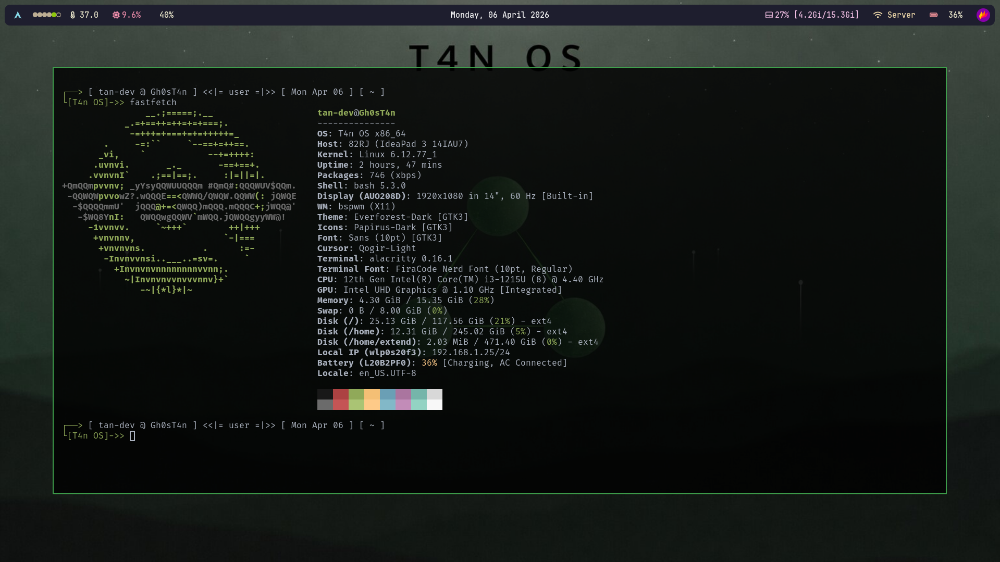
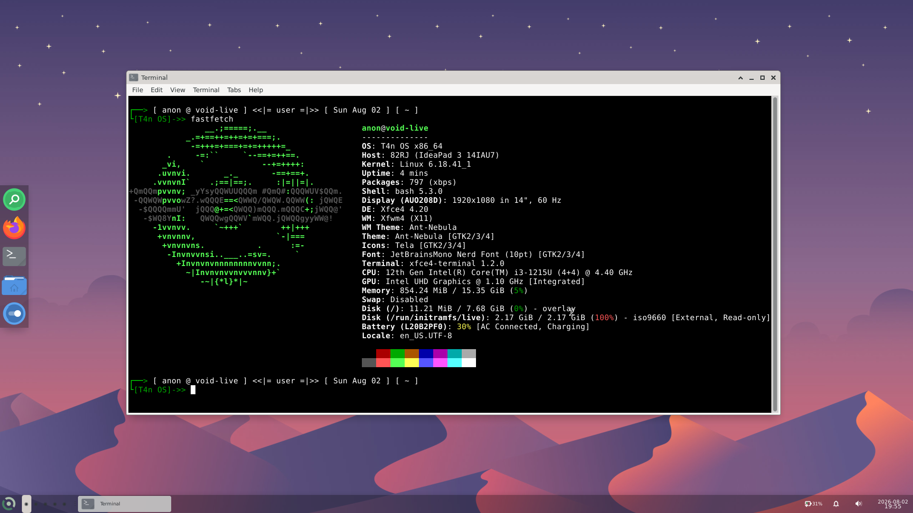
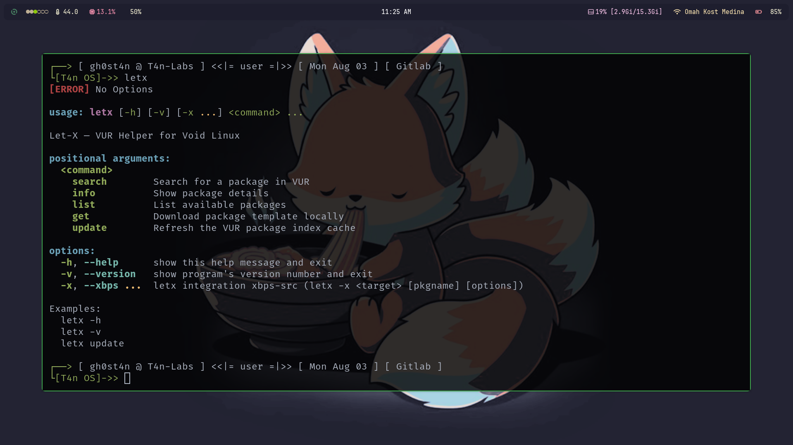

About T4n OS
T4n OS is a GNU/Linux based on Void Linux, designed with minimalism, speed, and lightness in mind. It uses runit as its init system to provide maximum performance and full system control.
T4n OS was developed in Indonesia, Atjeh, and was first initiated by Gh0sT4n on August 17, 2025, a student from Aceh (Darussa'adah Cot Tarom Baroh - SMKN 5 Takengon). The development of T4n OS uses a community-driven approach: from the community, by the community, and for the community.
In addition, T4n OS adopts a repository concept inspired by AUR (Arch User Repository), namely VUR (Void User Repository), to make package distribution and management easier for users.
Filosofi
Keep Things Simple
・・・・・
Following the UNIX philosophy: do one thing well. Without unnecessary abstractions.
Community First
・・・・・
Projects are developed openly by the community, for the community.
Minimal by Default
・・・・・
Just what you need. A clean, basic system without bloatware or unnecessary apps.
Core Features
Void Linux Base
Inheriting the stability and speed of Void Linux as the main upstream.
Runit Init
A fast, lightweight, and easy-to-understand init system compared to systemd.
XBPS Package Manager
Extremely fast and efficient package management for dependencies.
VUR Ecosystem
Void User Repository. Instant access to thousands of community-generated add-on packages.
Rolling Release
Always get the latest kernel and software updates without reinstalling.
Lightweight
Architecture designed for maximum performance on both old and new hardware.
Gallery



Official Download
Choose Your Edition
Available in several variants tailored to your specific needs.